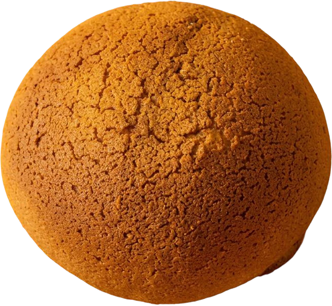
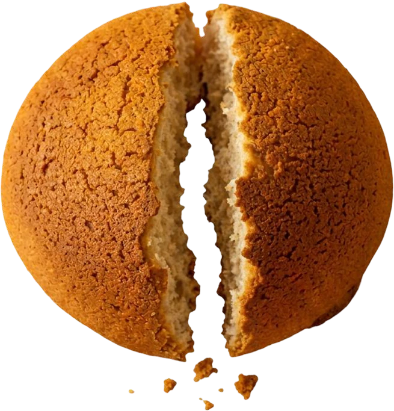
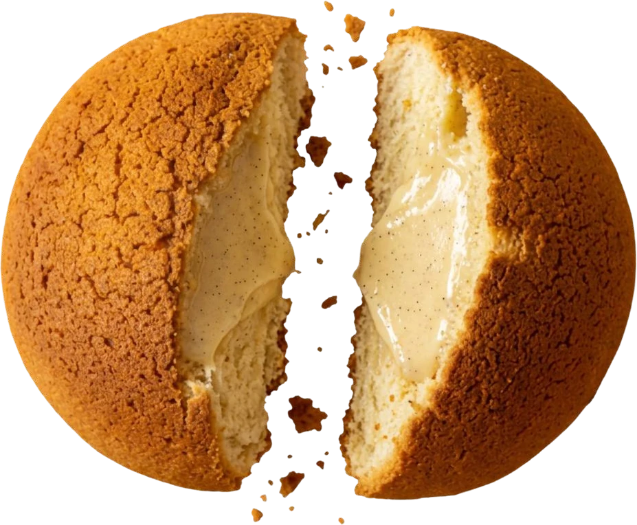
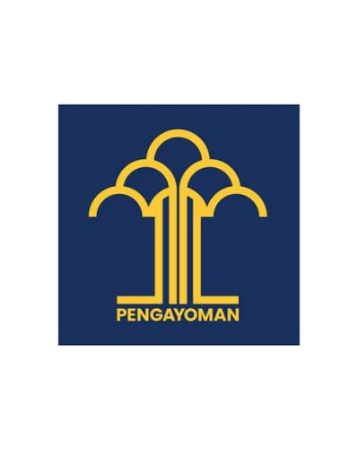
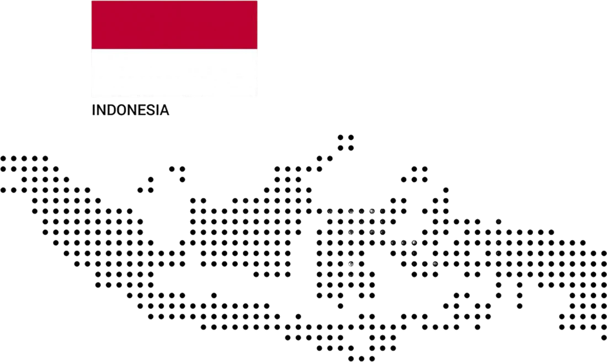

A LITTLE CRUNCH. A LOT OF JOY.
YOUR EVERYDAY
COFFEEBUN.
Teman kecil untuk
momen-momen besarmu.

THE GOOD STUFF, INSIDE & OUT
Sekali gigit.
Banyak rasa senang.
CrunchyRenyah di luar.
MeltLembut di dalam.

JoySesederhana ini. SweetManisnya pas.Dari gigitan pertama sampai remah terakhir.
Selalu ada alasan untuk satu lagi.
TEMUKAN FAVORITMU
Our dough.
Your mood.
Dua karakter.
Sama-sama bikin jatuh hati.

PILIHAN ISIANThe original
The original
little joy.
- Vanilla Custard
- Cheese Custard
- Chocolate Custard
- Banana Custard
Sertifikasi halal
BPJPH

Terdaftar dan berizin
Kementerian Hukum & HAM
Most Expansive Brand
IFBC 2024
SELALU ADA YANG DEKATLittle joy.
Little joy.
All around.
130+STORE DI INDONESIA
On the go?
We’re there, too.
EXCLUSIVE STOREPilih lokasi untuk mencari MammaRoti di Google Maps. Alamat dan jam operasional mengikuti informasi masing-masing outlet.
GROW WITH MAMMAGiliran kamu
Giliran kamu
punya outlet.
Bawa kebahagiaan sederhana ke kotamu. Yuk, bicarakan peluang kemitraan bersama MammaRoti.
Hubungi Kami
LET’S MAKE EVERY DAY A LITTLE SWEETER.DARI MAMMA, UNTUK KAMU
Berita & cerita.
Kenalan lebih dekat dengan
rasa dan cerita MammaRoti.
WE’RE ALL EARSAda cerita?
Ada cerita?
Mamma dengar.
Kamu punya saran, kritik, atau pertanyaan?
Bantu MammaRoti berkembang lebih baik.
Kami senang mendengar ceritamu.